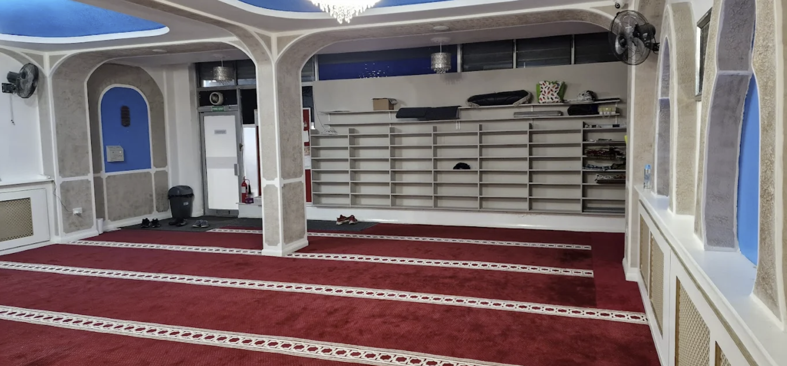
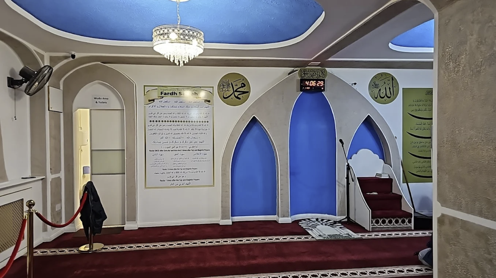

بِسْمِ ٱللَّهِ ٱلرَّحْمَٰنِ ٱلرَّحِيمِ
A place of worship, learning, and community in the heart of Aldershot
The Aldershot Islamic Centre was established by local brothers who recognised the need for a dedicated place of worship in our community. With sincerity, unity, and the help of Allah, they came together and opened a masjid in the heart of Aldershot, easily accessible for everyone who lives, works, or passes through the area. Today, our centre accommodates up to 150 worshippers at a time and serves as a welcoming home for Muslims of all backgrounds, offering a space for prayer, reflection, and connection.
Beyond the daily prayers and Jumu'ah, we are committed to nurturing faith and character through our weekday Madrasah for children, Qur'an Tajwīd classes, Qur'anic Arabic, and our nightly Qur'an Circle after Maghrib/Isha. We regularly host community events, guest scholars, and educational programmes to help strengthen families and bring hearts together. Our masjid is run entirely by the community, and through your support, we aim to continue growing, improving our services, and serving as a centre of guidance, unity, and compassion for Aldershot and beyond.


No upcoming events at the moment. Please check back soon or follow us for updates.
Your donations help us maintain the house of Allah and support essential community services. Through your generosity, we are able to run daily prayers, classes, events, and support those in need. Every contribution, big or small, helps strengthen our masjid and benefits the entire community.
Learn MoreOur masjid currently operates from a rented building with a high monthly cost, and we are working towards purchasing a permanent place that will serve the community for generations to come. With your support and generosity, we aim to establish a stable, long-term home for Muslims in Aldershot and the surrounding areas.
Learn MoreEvery night after 'Isha, brothers gather to recite the Qur'an together in a calm and supportive environment. We correct recitation, review Tajwīd rules, and reflect briefly on meanings and lessons. All levels are welcome, and it is a beautiful opportunity to reconnect with Allah's words.
Learn MoreOur weekday Madrasah provides children aged 7–14 with structured learning in Qur'an (with Tajwīd), Islamic Studies, and Qur'anic Arabic. We aim to nurture good character, love for the deen, and confidence in their Islamic identity through engaging lessons and a caring environment.
Learn MoreYour generosity keeps the masjid running and helps us serve the community. Every donation, no matter how small, makes a difference.
Donate Now